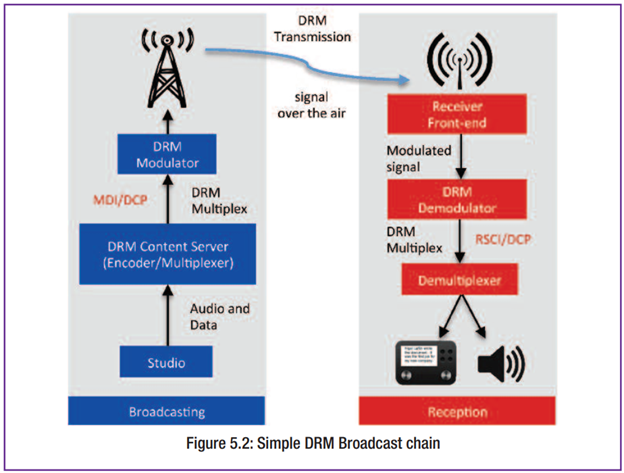
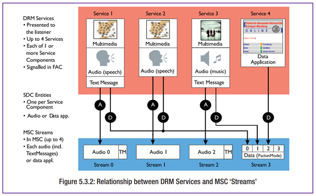
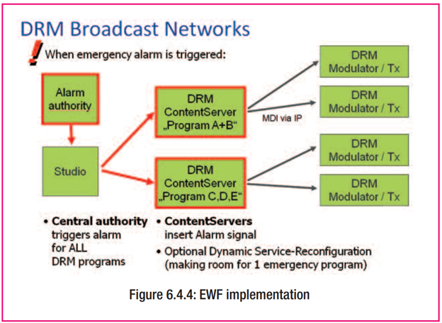

DRM คืออะไร?
ระบบกระจายเสียง DRM ได้รับการออกแบบโดยผู้ประกอบกิจการกระจายเสียง เพื่อผู้ประกอบกิจการกระจายเสียง โดยได้รับความร่วมมืออย่างแข็งขันจากผู้ผลิตเครื่องส่งและเครื่องรับ รวมถึงหน่วยงานที่เกี่ยวข้องอื่น ๆ (เช่น หน่วยงานกำกับดูแล) โดยระบบนี้ออกแบบมาโดยเฉพาะให้เป็นระบบกระจายเสียงดิจิทัลคุณภาพสูง ที่สามารถนำมาใช้แทนระบบวิทยุแอนะล็อกเดิมในย่าน AM และ FM/VHF ได้ โดยใช้โครงสร้างความถี่และการจัดสรรช่องสัญญาณแบบเดียวกับที่ใช้ในปัจจุบัน
สำหรับการส่งสัญญาณทางกายภาพ มาตรฐาน DRM ได้กำหนดรูปแบบการทำงานไว้หลายแบบ (เช่น ชุดพารามิเตอร์การมอดูเลต) ซึ่งแบ่งได้เป็นสองกลุ่มหลัก:
- DRM สำหรับความถี่ต่ำกว่า 30 MHz: ใช้ 4 โหมดความทนทาน (robustness modes) ที่ออกแบบมาให้เหมาะสมกับการแพร่สัญญาณในย่าน AM ที่มีลักษณะการแพร่สัญญาณหลากหลาย เพื่อให้สามารถครอบคลุมพื้นที่ระดับภูมิภาคจนถึงระดับนานาชาติได้
- DRM สำหรับความถี่สูงกว่า 30 MHz: ใช้โหมดความทนทานที่ออกแบบมาเฉพาะสำหรับการส่งในย่าน VHF ซึ่งเน้นใช้งานในย่าน FM และเหมาะสำหรับบริการวิทยุท้องถิ่นถึงระดับภูมิภาค
แม้ว่าจะมีการกำหนดพารามิเตอร์ความทนทานที่แตกต่างกัน แต่ชั้นการบริการ (Service Layer) และคุณลักษณะต่าง ๆ ของ DRM ยังคงเหมือนกันในทุกรูปแบบการใช้งาน ไม่ว่าจะเป็นความถี่ใด ระบบ DRM ได้รับการแนะนำโดย ITU (สหภาพโทรคมนาคมระหว่างประเทศ) และมีการเผยแพร่มาตรฐานหลักโดย ETSI รวมถึงมีการรวบรวมมาตรฐานทางเทคนิคที่เกี่ยวข้องไว้อย่างครบถ้วน
นอกจากนี้ DRM ยังเป็นระบบแบบเปิด (open standard) หมายความว่า ผู้ผลิตและผู้เกี่ยวข้องทุกฝ่ายสามารถเข้าถึงรายละเอียดทางเทคนิคได้อย่างเสรีและเท่าเทียมกัน ช่วยส่งเสริมให้เทคโนโลยีใหม่เข้าสู่ตลาดได้รวดเร็ว และต้นทุนของอุปกรณ์ก็ลดลงตามไปด้วย เป็นประโยชน์ต่อนักกระจายเสียง ผู้ผลิตอุปกรณ์ และผู้ฟังที่ต้องลงทุนในเครื่องรับวิทยุดิจิทัลแบบ DRM

ทำไมต้องเปลี่ยนเป็นระบบดิจิทัล?
ทั่วโลกกำลังเปลี่ยนผ่านไปสู่เทคโนโลยีดิจิทัลในด้านวิทยุกระจายเสียงและการสื่อสาร โดยเฉพาะในส่วนของการกระจายและส่งสัญญาณ การนำระบบดิจิทัลมาใช้ในย่าน AM และ FM ช่วยให้ผู้ประกอบการสามารถให้บริการที่มีคุณภาพทั้งในปัจจุบันและอนาคตได้
ระบบดิจิทัลมีข้อดีหลายประการเมื่อเทียบกับระบบแอนะล็อก เช่น:
- ความน่าเชื่อถือของบริการที่สูงขึ้น
- คุณภาพเสียงที่ดีขึ้น
- ความสะดวกในการใช้งานมากขึ้น (usability)
ระบบ DRM มีฟีเจอร์มากมายที่ไม่สามารถทำได้ในระบบแอนะล็อก ซึ่งมีความยืดหยุ่นสูง ผู้ประกอบการสามารถกำหนดค่าระบบให้เหมาะสมกับตลาดของตนได้ เช่น การปรับเปลี่ยนคุณภาพเสียง (bit-rate) ความทนทานของสัญญาณ (robustness) พลังงานที่ใช้ และพื้นที่ครอบคลุม ได้แบบพลวัต (dynamic) โดยไม่กระทบผู้ฟัง เช่น ปรับเพื่อรับมือกับการรบกวนทางไกลในยามค่ำคืน
DRM เป็นระบบดิจิทัลเพียงระบบเดียวที่ครอบคลุมทุกย่านความถี่ที่ใช้ในการกระจายเสียง ทั้ง AM, FM และ VHF จึงเหมาะสำหรับการเปลี่ยนจากแอนะล็อก และสามารถใช้ร่วมกับระบบดิจิทัลอื่นที่เปิดมาตรฐาน เช่น DAB
ในด้านการตลาด ระบบดิจิทัลจะประสบความสำเร็จก็ต่อเมื่อผู้ฟังได้รับประโยชน์ที่ชัดเจน เช่น:
- มีบริการมากขึ้นให้เลือก
- การเลือกสถานีง่ายขึ้น เช่น เปลี่ยนความถี่อัตโนมัติ หรือใช้ EPG
- เสียงสเตอริโอในย่าน AM และเสียงรอบทิศทางในรถยนต์
- คุณภาพเสียงที่ดีขึ้นและคงที่
- มีข้อมูลประกอบรายการ เช่น ข้อความ รายละเอียดเนื้อหา หรือข้อมูลจราจร

คุณลักษณะเด่นของระบบ
DRM ได้รับการออกแบบให้สามารถใช้งานร่วมกับการแพร่สัญญาณแอนะล็อกได้ ทำให้การเปลี่ยนผ่านจากแอนะล็อกสู่ดิจิทัลสามารถทำแบบค่อยเป็นค่อยไป และช่วยลดต้นทุนการลงทุนเริ่มต้น เช่น:
- ผู้ส่งเดิมสามารถดัดแปลงเป็นเครื่องส่งดิจิทัลได้
- ลดค่าใช้จ่ายด้านพลังงาน
ในย่านความถี่ต่ำกว่า 30 MHz (AM), DRM ใช้คุณสมบัติการแพร่สัญญาณพิเศษของคลื่นย่านนี้ เพื่อให้บริการที่ครอบคลุมกว้างขึ้นด้วยคุณภาพเสียงที่ดีเทียบเท่า FM ในย่านความถี่สูงกว่า 30 MHz (เช่น VHF/FM), DRM ใช้ความกว้างแถบสัญญาณน้อยกว่าการแพร่สัญญาณ FM แบบสเตอริโอทั่วไป แต่ให้คุณภาพสัญญาณที่สูงกว่า และสามารถเพิ่มความทนทาน ลดพลังงาน เพิ่มพื้นที่บริการ หรือเพิ่มบริการเสริมได้
ระบบ DRM ยังมีความสามารถและฟีเจอร์ที่โดดเด่นเพิ่มเติม เช่น:
- การตั้งค่าพารามิเตอร์การมอดูเลตเพื่อสมดุลระหว่างคุณภาพกับความทนทานของสัญญาณ
- รองรับเครือข่ายความถี่เดียว (SFN) และเครือข่ายหลายความถี่ (MFN)
- การส่งสัญญาณแนะนำความถี่สำรอง (AFS) เพื่อให้เครื่องรับเปลี่ยนคลื่นโดยอัตโนมัติ
- บริการข้อมูลเพิ่มเติม เช่น SlideShow, SPI (ข้อมูลรายการ), Journaline (บริการข้อมูลเชิงโต้ตอบ)
ฟังก์ชันแจ้งเตือนภัยฉุกเฉิน (Emergency Warning Functionality – EWF) เป็นอีกหนึ่งความสามารถที่สำคัญของ DRM ระบบสามารถส่งสัญญาณแจ้งเตือน พร้อมข้อความและข้อมูลหลากหลายภาษาไปยังผู้ฟังในพื้นที่ภัยพิบัติ แม้ว่าสิ่งอำนวยความสะดวกอื่นจะถูกตัดขาดไปแล้ว
DRM สามารถทำงานได้ตั้งแต่พลังงานไม่กี่วัตต์ ไปจนถึงหลายร้อยกิโลวัตต์ ครอบคลุมทั้งการกระจายเสียงในระดับชุมชนไปจนถึงระดับนานาชาติ
